Grace
Grace 是北航 Toastmasters 资历很老的一位会员。早在 2014 年秋天，她就站上了第 79 次例会的舞台，用破冰演讲《Where Has I Gone》追问"小时候那个充满想象力的自己去哪儿了"，迈出了头马旅程的第一步。同一时期，她已经能担任 Movies、Mars vs. Venus、Fitness 等多场例会的主持人（Toastmaster）与即兴主持（Table Topics Master），是俱乐部早期相当活跃的台前力量。2014 年底的告别晚会上，她献唱《那些花儿》，还与 Keven 合唱《Always with Me》，温柔而有感染力。
进入 2015 年，她在备稿演讲上稳步推进，先后带来《Improve Your Recovery Rate》（讲心灵创伤的恢复）、《How to Make a French Chocolate Lava Cake》（教大家做法式熔岩蛋糕）等作品，话题从健康、心理到生活情趣，始终带着一份从容与生活气息。
到了 2016—2017 年，Grace 成了大家口中"as an old member of Beihang Toastmaster"的资深前辈。即便已经离开校园、在别处工作，她仍多次"回家"——回到曾经求学工作的北航舞台讲即兴、做备稿，新年立志要把英语讲得更流利。她的即兴发言被小编评价为"头马舞台就是为她这样的人准备的"，自信、优雅、表达流畅。她也带来《My University / On My Love》《How to Survive in PM2.5 City》等备稿，把对生活、亲情与爱情的体会娓娓道来；在《时光机》一期里，她坦言最想回到高一，弥补对奶奶和家人发过的小脾气，真诚而动人。
性格上，Grace 体贴而有担当——有新人在台上忘词慌乱时，她会主动重复问题替对方解围，被记在了纪要里成为一段佳话。多年间她在主持、即兴、备稿、表演各个角色之间自如切换，是北航头马早期文化里温暖而可靠的一员。
完整足迹 · 25 次出现（点开，每条可跳转原文）
- 2014-11-07第77次 · 担任77次会议主持
- 2014-11-21第79次 · 破冰演讲 Where Has I Gone
- 2014-11-23第79次 · 破冰首秀 Where Has I Gone
- 2014-12-26第83次 · 演唱《那些花儿》
- 2015-03-20第88次 · 担任Table Topic Master
- 2015-04-15第92次 · 担任第92次会议(Fitness)Toastmaster
- 2015-04-23做备稿演讲Improve Your Recovery Rate
- 2015-05-20第96次 · 做备稿演讲How to Make a French Chocolate Lava Cake
- 2015-05-28第97次 · 做备稿演讲Four Basic Rules To Stay Healthy
- 2015-05-29第97次 · 做备稿演讲Four Basic Rules To Stay Healthy
- 2015-07-02第102次 · 备稿演讲《WeChat Is An Ocean》(文中作Grace²/Grace Zhang)
- 2016-06-20第142次 · 即兴演讲回答好友爱上同一帅哥的问题
- 2016-08-18第149次 · 担任即兴演讲主持人
- 2016-09-28第153次 · 做即兴演讲，谈继续学习还是工作的选择
- 2016-12-22第163次 · Resolution@minutes of Beihang & Ameco-TM
- 2017-03-07第165次 · Spring Festival@minutes of Beihang TMC16
- 2017-03-28第168次 · 时光机@BeiHang ToastMaster 168 Meeting Minu
- 2017-04-08第169次 · Plan Your Life@BeiHang-TMC-169th Meeting
- 2017-04-13第170次 · Spring@BeihangTMC 170th Meeting 19:30 Ap
- 2017-04-23Love@BeiHangTMC-171th-Meeting Minutes
- 2017-05-12第173次 · Persistence@BeiHangTMC 173rd Meeting 19:
- 2017-05-14第173次 · Persistence@BeiHangTMC 173rd Meeting Min
- 2017-06-06第175次 · Ode to Joy@BeiHang TMC 175th Meeting Min
- 2017-06-16第177次 · House@BeihangTMC 177th Meeting 19:30 Jun
- 2017-09-14第180次 · New semester@BeihangTMC 180th Meeting 19
闯关之路 · Competent Communication
做过的演讲 · 7 场
担任过的职务 · 俱乐部官员
担任过的会议角色
里程碑
为俱乐部做的事
- 作为早期资深会员长期活跃，多次担任例会主持与即兴主持，撑起台前环节。
- 在告别晚会上参与演出，丰富俱乐部的文化与情感氛围。
- 毕业离校后仍多次'回家'登台，为后辈树立了持续参与、终身学习的榜样。
- 在新人台上忘词慌乱时主动重复问题替其解围，体现对会员的体贴与扶持。
照片墙 · 时间线
 ✓
✓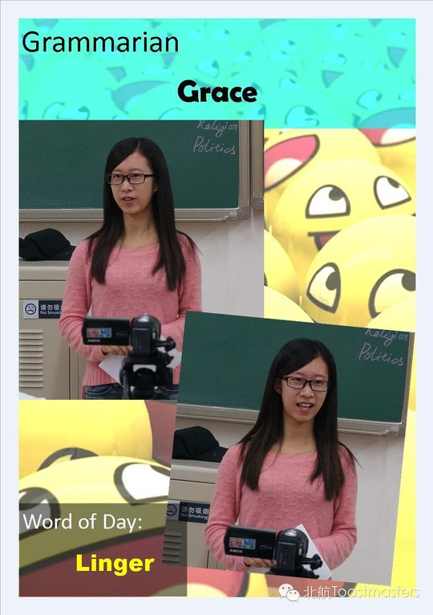
✓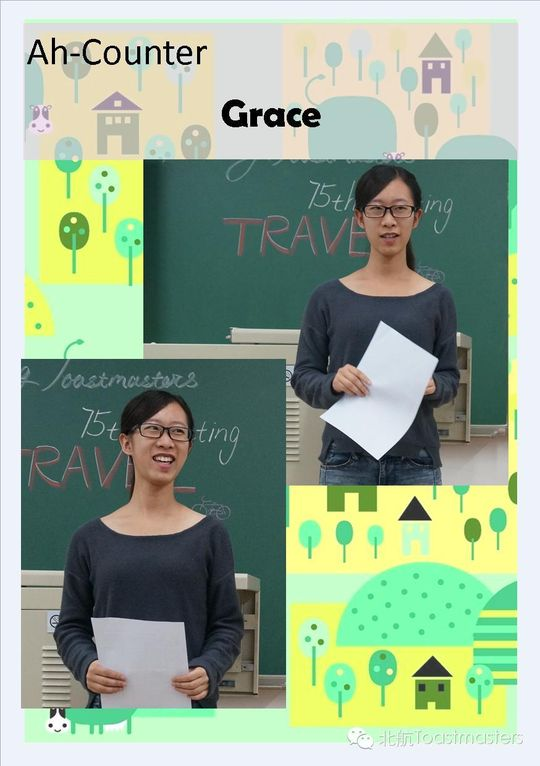
✓ ✓
✓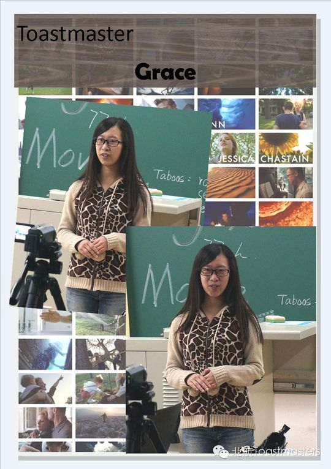
✓ ✓
✓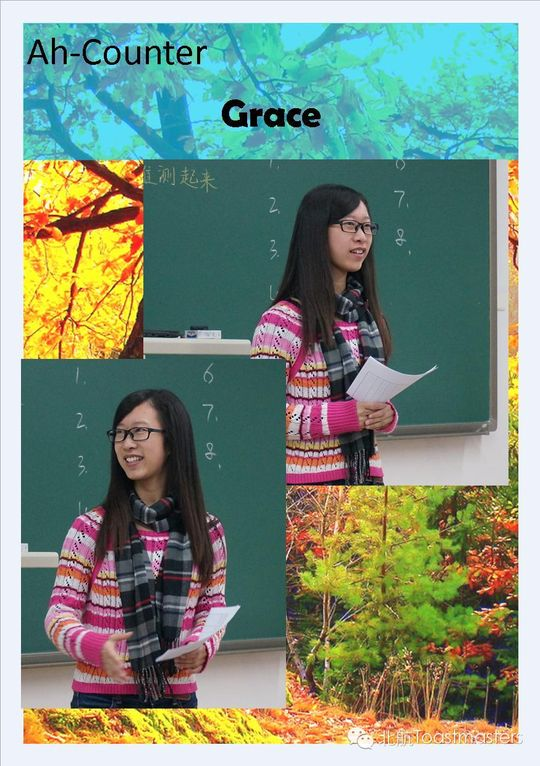
✓ ✓
✓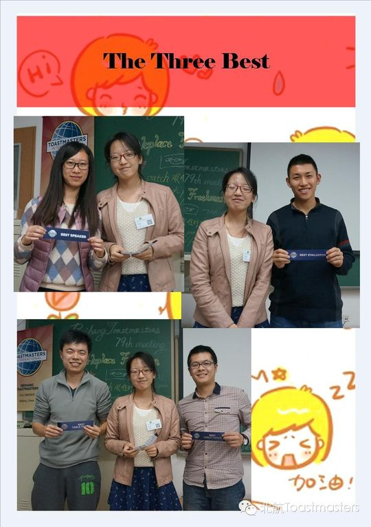
✓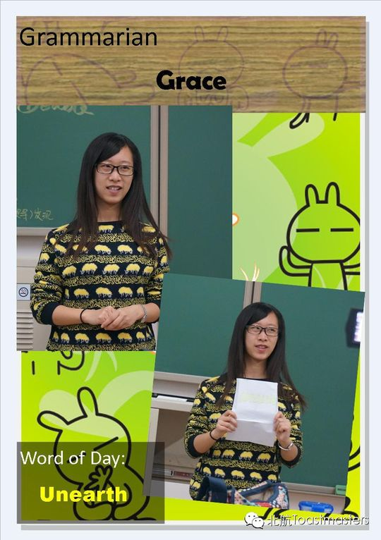
✓ ✓
✓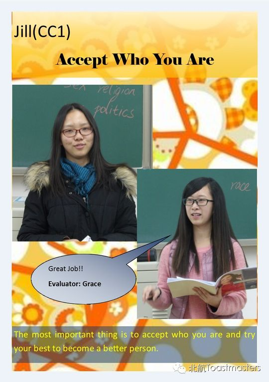
✓ ✓
✓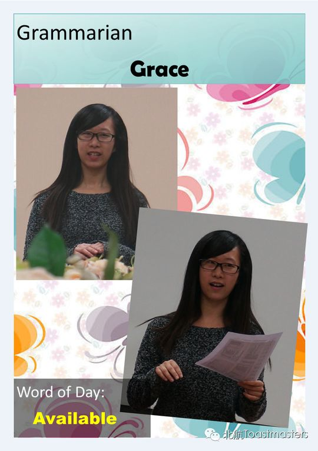
✓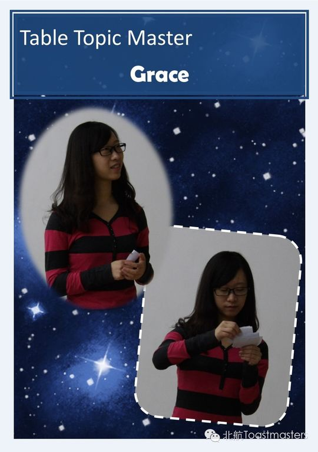
✓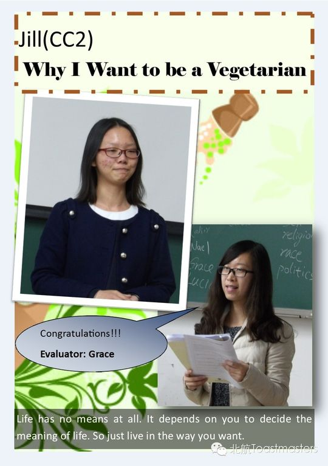
✓ ✓
✓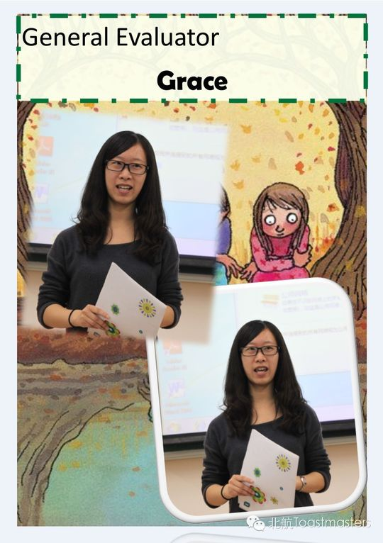
✓ ✓
✓ ✓
✓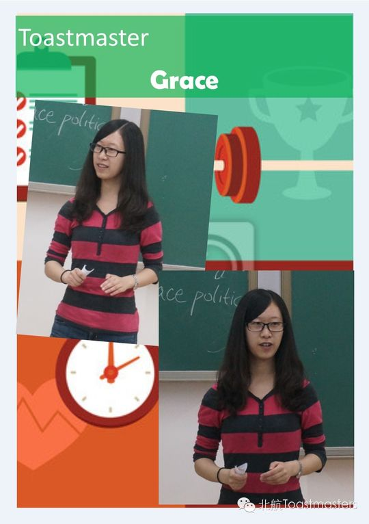
✓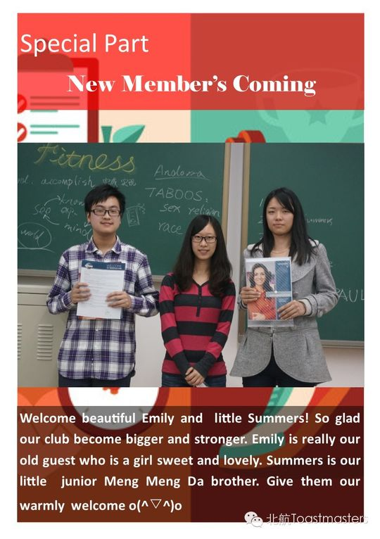
✓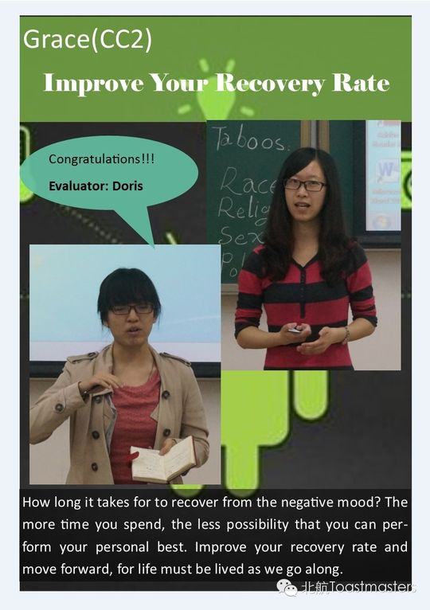
✓ ✓
✓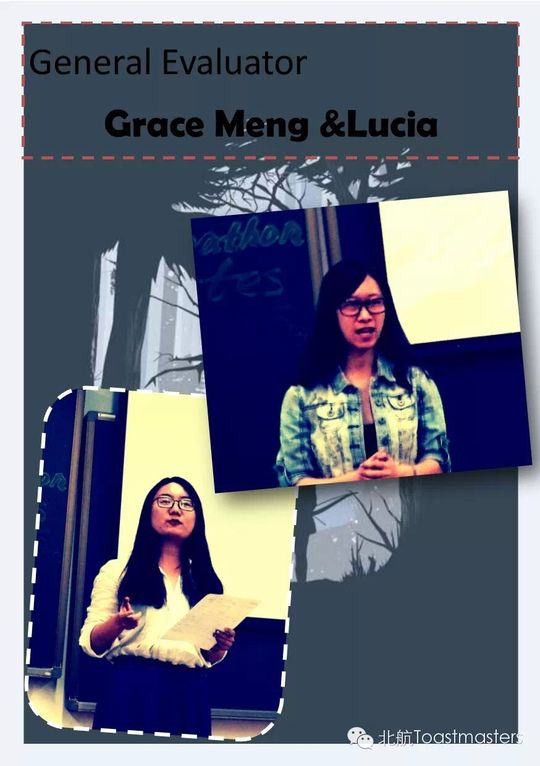
✓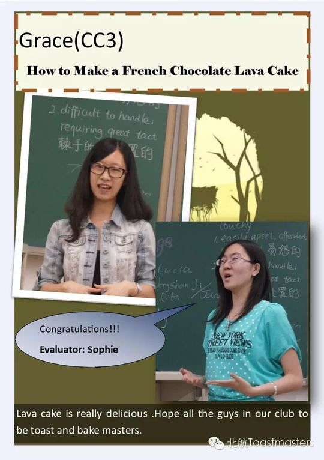
✓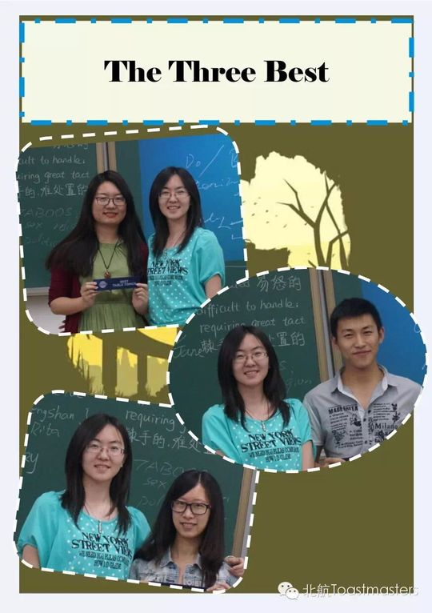
✓ ✓
✓ ✓
✓ ✓
✓